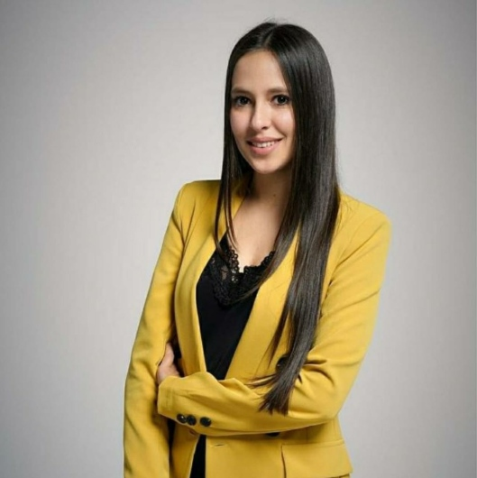

Recupera tu calma, recupera tu bienestar
Soy Jessica, psicóloga sanitaria. Te acompaño en terapia individual, cognitivo-conductual y sistémica, con un trato cercano y estrategias claras desde la primera sesión.

Psicología cercana, con método
Soy Jessica Sanz Bermúdez, psicóloga sanitaria colegiada en Madrid. Atiendo a adultos, adolescentes y niños desde un enfoque cognitivo-conductual y sistémico.
En cada sesión te explico qué trabajamos y por qué, para que salgas con estrategias concretas y con la seguridad de un espacio donde sentirte cómodo.
- Colegiada M-32962
- Terapia cognitivo-conductual
- Terapia sistémica
- Infantojuvenil
- Adicciones
¿En qué puedo ayudarte?
Consulta de psicología sanitaria para adultos, adolescentes y niños, en Madrid y online.
Terapia individual
Acompañamiento personal para ansiedad, estrés, baja autoestima y estado de ánimo.
Terapia cognitivo-conductual
Herramientas prácticas para cambiar pensamientos y conductas que te hacen sufrir.
Terapia sistémica
Trabajo sobre las relaciones y el entorno familiar y de pareja.
Infantojuvenil
Terapia psicológica para niños y adolescentes.
Tratamiento de adicciones
Apoyo psicológico en procesos de recuperación y dependencia.
Terapia online
Sesiones por videollamada, sin desplazamientos.
«Pedir ayuda no es debilidad: es el primer paso de cualquier cambio.»Empezamos juntos
Datos de la consulta
Todo lo que necesitas saber antes de tu primera cita.
Psicóloga colegiada · Nº M-32962
Puedes comprobarla en el Colegio Oficial de Psicología.
Psicología sanitaria
Primera visita y consulta de psicología sanitaria.
Cognitivo-conductual y sistémico
Terapia individual, infantojuvenil y de adicciones.
Calle Marmolina, Vicálvaro
28032 Madrid.
Atención privada
No se trabaja con aseguradoras.
Presencial u online, tú eliges
Terapia presencial
En mi consulta de Vicálvaro, un espacio tranquilo y cómodo. Calle Marmolina, 28032 Madrid.
Terapia online
Por videollamada, desde donde estés y sin desplazamientos.
Quizá te reconozcas aquí
- Sientes ansiedad o estrés casi todos los días.
- Te cuesta dormir por los pensamientos.
- Tienes miedos o ataques de pánico.
- Notas baja autoestima o dependencia emocional.
- Atraviesas un duelo o una crisis de pareja.
- Tu hijo o hija adolescente lo está pasando mal.
- Pensamientos o rituales que no puedes controlar.
- Quieres dejar atrás una adicción.
Lo que dicen mis pacientes
Una madre cuenta que, tras pasar por varios psicólogos, Jessica fue la única que ayudó de verdad a su hija y a ella.
D.C. · Consulta online · febrero 2025Lleva cinco años en terapia con ella y destaca el ambiente de intimidad y comprensión de las sesiones.
Matías · Terapia individual · febrero 2025Valora su empatía y cómo sabe escuchar y orientar durante la terapia.
Greco · Terapia sistémica · enero 2025Agradece su disponibilidad y dedicación, y que desde el primer día le explicó el trabajo con estrategias concretas.
Alba Ruíz · enero 2025Opiniones verificadas de pacientes · leerlas completas en Doctoralia
Resolvemos tus dudas
¿Qué servicios ofreces?
Primera visita, consulta de psicología sanitaria, terapia individual, cognitivo-conductual, sistémica, infantojuvenil, tratamiento de adicciones y terapia online.
¿Dónde está la consulta?
En la calle Marmolina, en el distrito de Vicálvaro (28032 Madrid).
¿Trabajas con aseguradoras?
No. La consulta atiende únicamente a pacientes privados.
¿Cómo reservo una cita?
Contacta directamente con la consulta para conocer la disponibilidad y concertar tu primera visita.
¿A quién atiendes?
A adultos, adolescentes y niños, tanto en terapia individual como con enfoque sistémico.
Dar el primer paso es lo más difícil. Yo te acompaño.
Reserva tu primera sesión y empezamos a trabajar a tu ritmo.
Reservar primera citaHablemos
Contacta con la consulta para conocer la disponibilidad y reservar tu primera cita.
- Consulta
- Calle Marmolina, Vicálvaro · 28032 Madrid
- Colegiación
- Nº M-32962
- Pacientes
- Atención privada, sin aseguradoras
- Perfil profesional
- Ver en Doctoralia